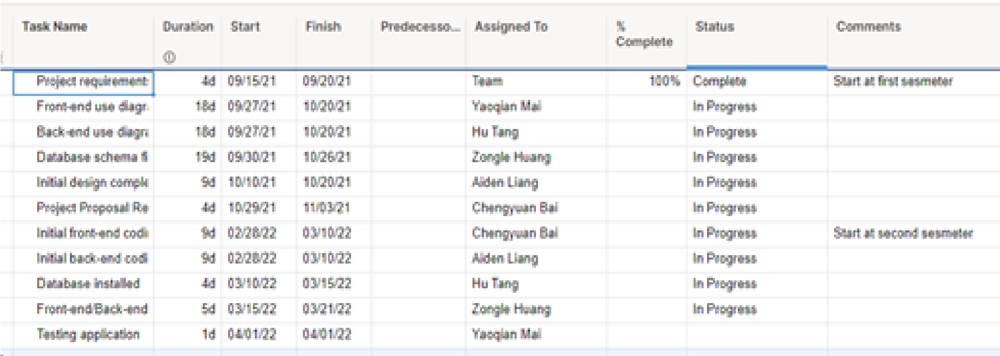
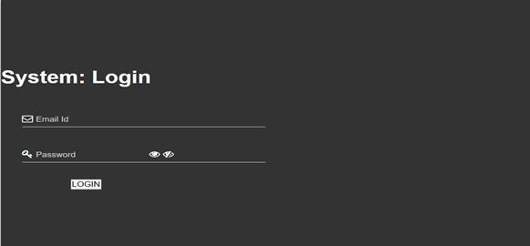
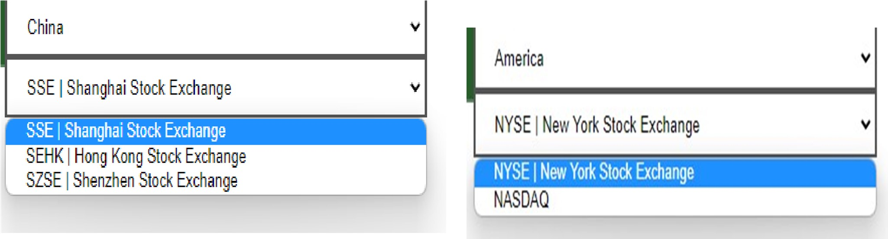
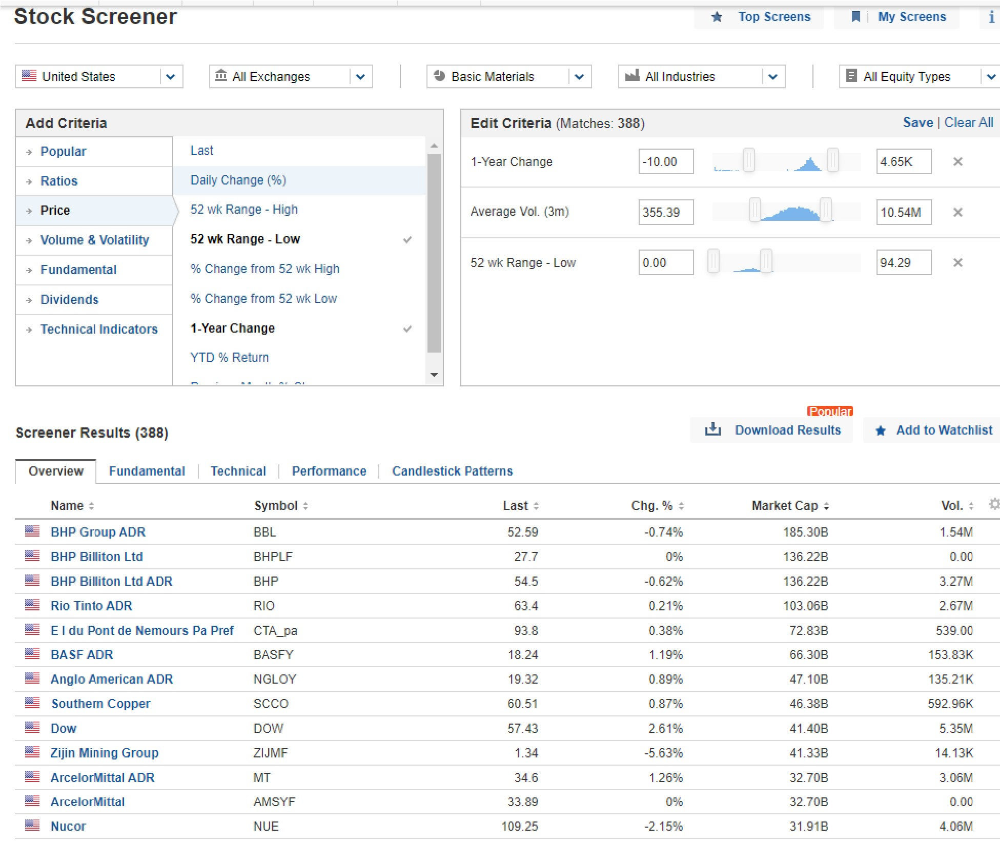
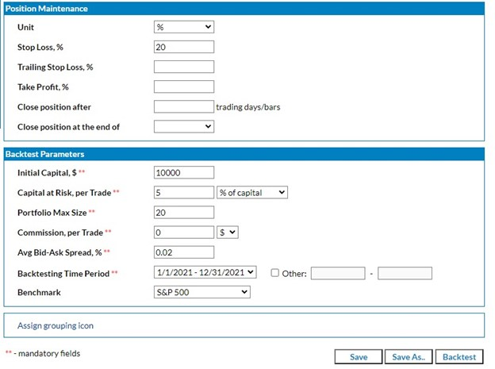
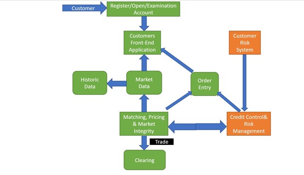

Project Proposal
Team No.2
Team Members
Zongle Huang
Chengyuan Bai
Aiden Liang
Hu Tang Yaoqian Mai
Project Name
Stock analyzer
Project Synopsis
An application that let people buy stock with it. Provide recognized stock pools, help people to make decisions, and provide value information.
Project Description
• Why is the project being undertaken?
This project is being undertaken to improve the benefit of individual investors. Because many people want to try stocks, but not everyone is an economist, and majority companies or cooperation can hire specialties to spend tons of time investigating, training, and simulating the trading on databases, cloud, paid platforms. The advantages of individual investors are being suppressed. There are many kinds of stocks in the stock exchange market, and most people cannot find the information they need quickly and effectively. So, it is critical to create software to help them filter out some good value stocks. In our project, we try to create a software to analyze the stock market and provide some effective information about stocks.
Describe an opportunity or problem that the project is to address.
Stock trading is very complex and requires the analysis of various data. Therefore, in order to obtain the suitest stratege, it is necessary to use big data to obtain and analyze information from various websites, which is a huge challenge for undergraduates to implement web data crawlers. It also involves money, so the safety aspect is very important. We might also need to simulate the trading before we actually use it, so to build a simulator can also be a potential problem.
What will be the end result of the project?
It will be an application called Automated Stock Trading System. Help people analyze the rise and fall of stocks and provide real-time information. Analyze and provide effective stocks. When the stock fluctuates sharply, it can remind people to reduce losses in time.
Project Milestones

First Semester:
Project Requirements/Plan (09/24)
Front-end, Back-end use diagrams completed (10/15)
Database schema finalized and initial design (10/29)
Project Proposal Report (11/06)
Second Semester:
Initial front-end (02/29)
back-end coding (03/15)
Testing application (03/25)
Final Project Proposal (04/01)
Final Project Proposal video
Project Budget
Need filter-50-100 USD
Preliminary Project Design
How the software works
Auto Earn will be a stock market auto trade tool that is primarily aimed at adults and elder who have interest in the stock market and have money to invest. During our research, we found that most of the companies use programming to analyse the market and create some strategy to help them trade, and online trading and analysis systems are broadly used in the financial area. Generally speaking, our program will help individuals who don’t have the knowledge and resources on the stock area to invest simpler. The software will be a local application that needs to download and input information into it, and it will output the suggested stocks to buy.
The basic organization of the software is that it obtains users input screening strategy, including a company’s financial and fundamental analysis and applies it to a certain history/ market in order to calculate the same strategy’s probability of earning and losing. First enter the software, the user will see the create account and password or login option like every social account does. Then the user will be able to select the location of the market, like America, Europe or Canada, then select the more specific market like New York Stock Exchange or Nasdaq. After selecting the location, there are several additional features that are available to select, like industry or sector, but the user can also skip the part. After fulfilling the pre-request information, the user can now select several different analyses to screen the pools from several aspects, including
Popular, Ratios, Price, Volume & Volatility, Fundamental, Dividends and Technical Indicators.
For each main criteria, the user will have further selection, for example: Price->Last,
DailyChange%, 52wk Range-High/low, 1yr Change, etc. The software will list all of the stocks that've been screened and the user can remove stocks that don’t meet the requirements. After that, the user will be able to save the strategy and to apply it to other locations or sectors. The next step is to apply the strategy in certain history, location or industry to check whether the earn/lost ratio and expected value is profitable.
The software will provide the expected value, probability etc and generate an outcome about the strategy. The software will simulate the strategy in history and check the amount of spend and amount of reward. One of the possibilities of the project is to try every single strategy and find the best one, but it requires tremendous storage and calculation so we need to find the best way to approach. The last step is to provide needed suggestions for the user to apply the outcome to the real world data. User will need to provide their account and password so that the system can access the saved strategy and auto trade filtered stocks by user’s willingness, the user will being notified every time when the system is operating the account to buy or sell, and the user will also know the amount of earned and the time of stocks being holded, in history.


Select location and stock exchange.

Stock filtering with several criteria(multiple selections) ： Example from investopedia.com

marketinout.com
Back testing the strategy by given strategy

Maching, Pricing & Market Intergrity
According to different matching algorithms, the simplest matching logic is actually easy to understand. The buy and sell orders are arranged in two lists according to the price. The bid price (BID) is from the high to the bottom (the higher the bid, the easier the transaction), and the sell The price (ASK) from low to high (the lower the selling price, the easier it is to trade).
Order Entry
The price from the matching system is what we say daily, and there are five levels of data, historical data, K-line integration, etc., which is another module that is responsible for the aggregation, sorting and broadcasting of prices.
Risk Control
The place responsible for receiving your buying and selling orders needs to do a risk check before sending it to the matching engine, such as whether the funds are sufficient, whether it is on the blacklist, whether the account is locked, and so on.
Front-end
Where the user may come into contact, control user entry, user session management, enter order, cancel, query order information, view account holding ratio and other information.
Clearing
The process of classifying and summarizing transaction data based on institutions and transaction types, and calculating the settlement amount.
Design Constraints
Technical Constraints
Security/High Availability
For the financial system, this is a rigid indicator. Security may be divided into different categories. For example, the internal environment of the enterprise. The financial system generally has its own proprietary network environment. There are also very strict controls on the office work behavior. After all, the fortresses are often from Internal breaches.
Most of the parts related to our transactions are data and platform security, platform security, information exchange channel security, platform stability, data storage security, tamper-proof, and redundant backup to prevent loss. Thus, Regarding security issues, we are currently not very confident.
Business Constraints
Timetable: This project was proposed by Yaoqian Mai, and then we received his recruitment and joined in. The concept of this project was put forward in August 2021. We met with the professor and introduced our ideas. After the introduction, we started to make a plan. Our plan starts in September 2021. After the start of the plan, we will report on tasks every week to ensure that everything can be completed on time.
Team composition and composition: Each member of our team has their own good parts, and appropriate tasks are assigned according to each person's strengths. For the weak, we will help to ensure that everyone can contribute to the group. Enabling everyone to participate.
Ethical Issues
For stock trading, some ethical issues revolve around getting clients to make appropriate investments, and these investments may not bring as much income to advisors. This obviously violates the traditional moral concept. For example, this issue extends to investment. Putting customers into the right investment portfolio means evaluating and sticking to the customer’s risk tolerance and time frame. Older clients should generally not own 90% of growth stocks, even if he insists on doing so. Even if an investment is appropriate in terms of risk, ethical issues also involve costs. Perhaps there is a S&P 500 index foundation that pays a certain fee to the broker and sells it to clients. At the same time, there are several S&P 500 no-load funds and low-cost ETFs that will provide customers with the same market exposure at a lower cost, even if it means that advisors are paid much less. The needs of customers must be put first.
So for our stock trading software, there is no such same problem. Because our stock trading software mainly analyzes the market trend for customers, and obtains detailed data from various websites to provide them to customers. So as to give customers some basic concepts. These are just to help customers understand the stock from the side.
Some stocks are not recommended for clients, and these investments may not bring so much income to the consultant. The most important thing is that we set up an emergency reminder mode, if there is a large fluctuation in the stock, it will immediately alert the customer. These are all in order to be able to give customers a better personal experience.
Intellectual Property Issues
The program code of computer software can be protected by means of application software development rights. So as to protect our due ability. The graphical user interface of computer software can be protected by applying for a design patent. On the other hand, because our code also borrowed some open source code. We will mark where the open source code was obtained. Creating source code is a creative process, which means that the results of such works can be protected by copyright law, because the code can be treated as an original work by the author. At the same time, creating code involves hundreds of relatively small tasks. These tasks are repetitive, but not unique. Therefore, they are not protected by copyright. This is indisputable. We will carefully screen some of the open source code borrowed from our software to ensure the legitimacy of the code.
Regarding the images and designs in our software, they may conflict with other people's products. We will avoid conflicts and balance their development. Then our products should create due value in society and create benefits for the public. On the other hand, we may also conflict with other people's products on the name of the software. If there is a conflict, it is very difficult for us to register.
Change Log
Changed --Why is the project being undertaken?
We have made new changes to our project plan and understanding of the project, because as our project continues, we also have a new understanding of our project.
Changed--Project Milestone
In the continuous progress of the project, due to various factors, we have changed the original time. These are all adjustments made in order to be able to make reasonable adjustments to the project.